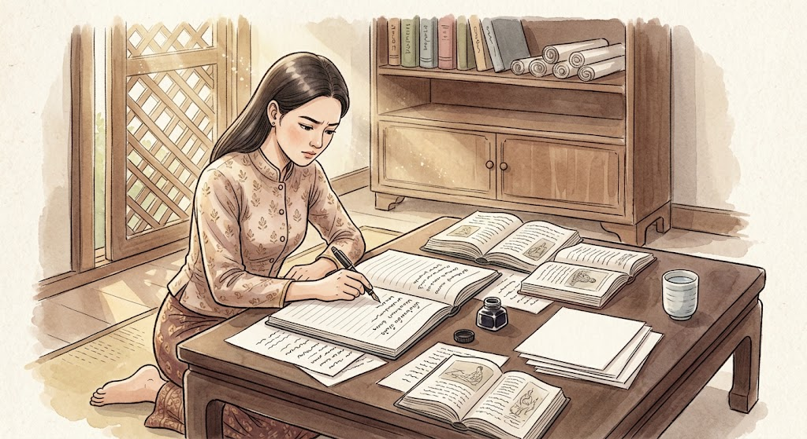

การเขียนรายงานวิชาการ
การเขียนรายงานวิชาการ คือ การนำเสนอข้อมูลหรือความรู้เกี่ยวกับเรื่องใดเรื่องหนึ่งอย่างเป็นระบบ โดยใช้การค้นคว้าจากแหล่งข้อมูลที่น่าเชื่อถือ มีการเรียบเรียงเนื้อหาอย่างมีเหตุผล และมีการอ้างอิงแหล่งที่มา เพื่อให้ผู้อ่านได้รับความรู้ที่ถูกต้องและสามารถตรวจสอบข้อมูลได้
รายงานวิชาการโดยทั่วไปประกอบด้วย ปก คำนำ สารบัญ เนื้อหา บทสรุป และบรรณานุกรม โดยเนื้อหาควรแบ่งเป็นหัวข้ออย่างชัดเจน ใช้ภาษาสุภาพและเป็นทางการ ไม่ใช้คำพูดที่ไม่เหมาะสม และควรเรียบเรียงด้วยภาษาของตนเอง ไม่คัดลอกผลงานของผู้อื่นโดยไม่อ้างอิง
ขั้นตอนการเขียนรายงาน ได้แก่ การเลือกหัวข้อ การกำหนดขอบเขต การค้นคว้าข้อมูล การจัดเรียงเนื้อหา การเขียนรายงาน และการตรวจสอบความถูกต้องก่อนส่งงาน การเขียนรายงานวิชาการช่วยฝึกทักษะการค้นคว้า การคิดวิเคราะห์ การเรียบเรียงภาษา และความรับผิดชอบในการทำงาน